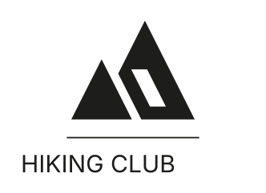
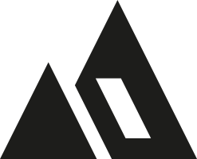
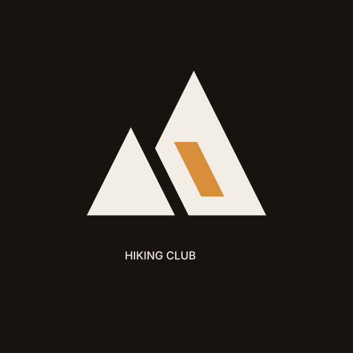
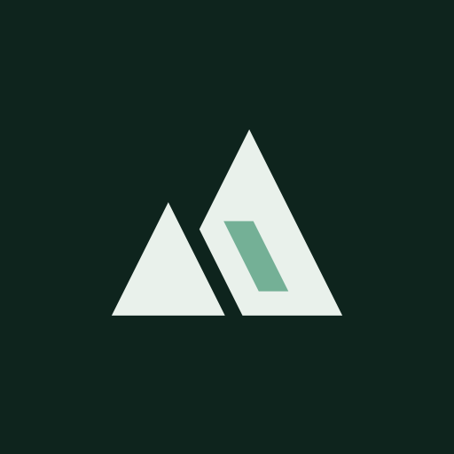

Ridge
at dawn
Mountaineering Club · SASSE
One geometry underpins the whole system: a 2:1 slope, a constant gap, a single ground line. Colour, type and templates all follow from it.
Five assets, one drawing. Pick by the space available, never by preference on the day.

logo.svg
logo-blanc.svg05-lockup.svg
marque.svgmarque-ambre.svgNothing enters the margin — not a rule, not a page edge. The margin is 13 % of the width of whatever you place: 44 px for a 340 px logo. The number is not arbitrary, it is the ratio between the width of the cleft and the width of the mark. So the margin scales with the logo and never needs recalculating.
Measured by rendering the logo at real size, not estimated. Below these thresholds the word closes up or the cleft fills in.
For embroidery, allow 45 mm wide minimum for the mark on its own: the cleft is 13 % of the width, and below that the needle fills it in.
Do not distort. The 2:1 slope is the subject.
Do not tilt. The ground line is horizontal.
Do not put ink on amber. 2.38:1.
No shadows or gradients. The mark is flat.
Four colours carry everything. Ink and paper are the constants, inherited from SASSE. Navy is the club's dark base. Amber is the only accent, and it lives on dark backgrounds only.
Ratios are calculated (WCAG 2.1), not approximated. Amber on paper falls to 2.38:1, so it is banned for text on light backgrounds. As a graphic fill on paper it is still usable, but never to carry information anyone has to read.
Colour does not dress the mark, it enters at exactly one place: the cleft. That is what makes the system recognisable without multiplying colours, and what keeps the silhouette readable at every size.

#D98E3C
#74B096#86C4E3A geometric sans for headings and the name, a neutral one for body text. Futura is the print face — it draws the wordmark. Jost is its free substitute on the web, within 2 % on set width.
Scale, ratio 1.333: 12 · 14 · 17 · 23 · 31 · 41 · 55. Take a value from the scale; do not invent one in between.
Ridge
at dawn

MOUNTAINEERINGSeason
2026
One source, tokens.css. The site, the slides and every template
read from it; no value gets copied anywhere else.
loading…